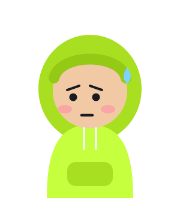

Chọn nhân vật cho kênh
Mỗi nhân vật: lúc ngại → lúc tự tin
A. Bé Đậu
dễ thương, trung tính
Ngại
Tự tin
B. Cậu Hoodie
hướng nội, giống người thật

Ngại (trùm mũ)
Tự tin
C. Tạ Tí
đồ vật gym, lạ mắt
Ngại
Tự tin